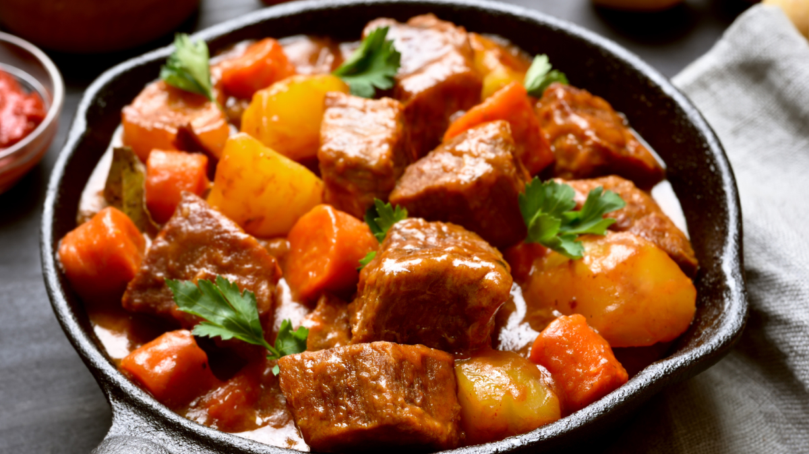

Paso a paso recetas
Receta de carne

Ingredientes de la receta
- 500 g de carne de res (en trozos, ideal para guiso)
- 3 papas medianas
- 2 zanahorias
- 1 cebolla blanca
- 2 dientes de ajo
- 1 pimentón rojo
- 2 tomates maduros o 1 taza de tomate triturado
- 2 cucharadas de aceite vegetal o de oliva
- 1 hoja de laurel
- 1 cucharadita de comino
- 1 cucharadita de paprika (pimentón dulce)
- Sal y pimienta al gusto
- Cilantro o perejil fresco para decorar
Paso a paso
- Preparar la carne
Corta la carne en cubos medianos, sazona con sal, pimienta y un poco de comino.
- Sellar la carne
En una olla grande calienta el aceite y dora la carne por todos los lados para sellar los jugos. Retira y reserva.
- Sofrito base
En la misma olla sofríe la cebolla, el ajo y el pimentón picados. Agrega el tomate triturado y cocina hasta que se forme una salsa espesa.
- Incorporar la carne
Vuelve a poner la carne en la olla, agrega la hoja de laurel, la paprika y mezcla bien con el sofrito.
- Agregar verduras
Añade las papas y zanahorias cortadas en trozos medianos. Vierte el caldo de carne (o agua), tapa la olla y cocina a fuego medio-bajo durante 40–50 minutos, hasta que la carne esté tierna y las verduras cocidas.
- Servir
Retira la hoja de laurel, corrige la sazón y sirve caliente. Decora con cilantro o perejil fresco.